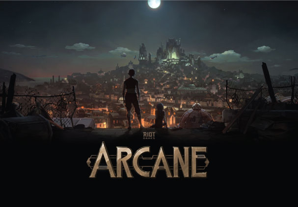
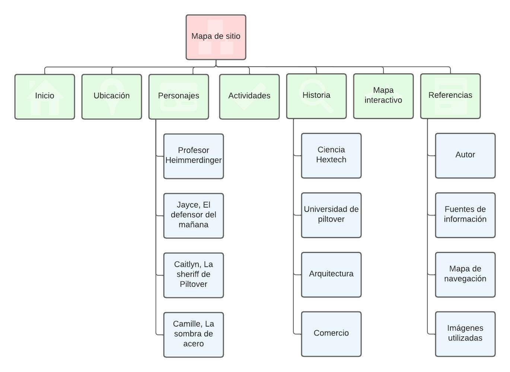
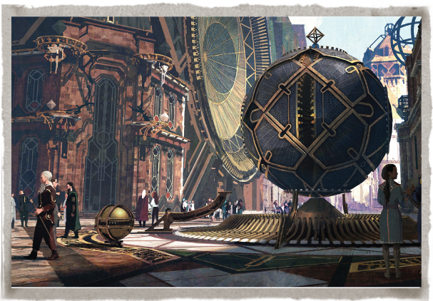
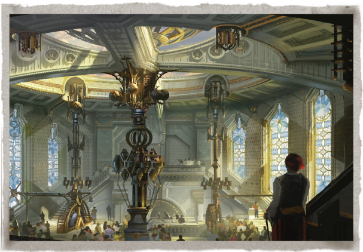
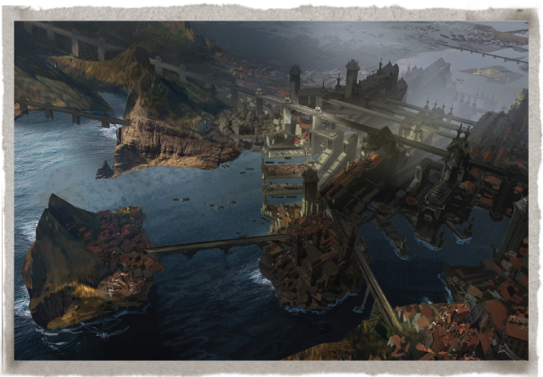
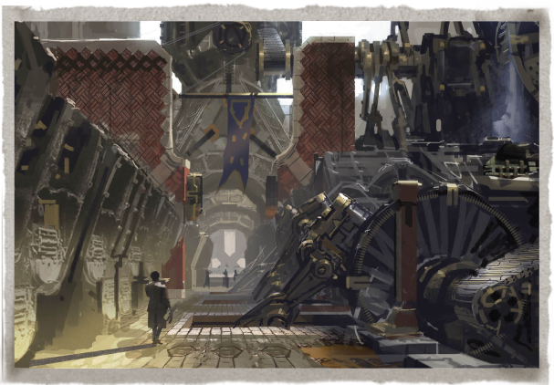
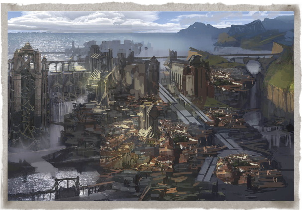
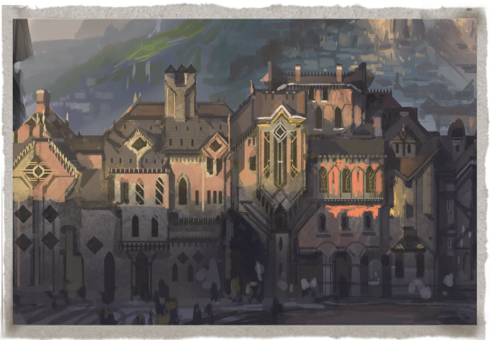

El autor de este sitio web es el el estudiante Ricardo Andrés Calvo Méndez, estudiante de Ingeniería de sistemas y computación de la Universidad Nacional de Colombia Sede Bogotá. También me desempello como desarrollador fullstack junior en la empresa Fit ideas desde hace un poco más de 9 meses.
Actualmente me encuentro haciendo el noveno semestre de mi carrera y busco fortalecer mis conocimientos en el desarrollo frontend, aprendiendo de este curso nuevas ideas para los diseños web que vengan en el futuro
Para construir este sitio web he utilizado la información que se encuentra de manera pública en el sitio web oficial de la empresa desarrolladora de software Riot Games, la cual está acargo de la produción de la serie de Netflix "Arcane" la cual me sirvio de inspiración para la temática de este sitio web.

Para profundizar más y leer muchas más historias de Piltover: la ciudad del progreso los invito a seguir al siguiente enlace en el cual podrán encontrar mucho más contenido referente a Piltover que el que se encuentra en este sitio web
Enlace: Piltover: La ciudad del progreso
Este sitio web contiene varios enlaces internos, para mostrar la navegación que se puede realizar, se encuentra el siguiente mapa de navegacion en el cual se puede evidenciar todo el flujo que se puede seguir:

Para las imágenes utilizadas en este sitio web he recorrido el sitio web de E Riot Games, aqui encontré diversas ilustraciones de los artistas de la compañía donde tratan de transmitir el ambiente progresista de esta ciudad ficticia, aqui he descargado las imágenes y he modificado sus tamaños usando el software Adobe Illustrator para así tener una mayor compatibilidad al momento de cargar y mostrar las imágenes. La mayoría de las imágenes las utilizo en concreto de esté sitio web
La propuesta creada en este sitio web fue dar un pequeño vistaso al universo de League of Legends, mas allá de ser un videojuego, se tienen muy buenas historias que la comunidad ha estado refinando para hacerlas mucho mas interesantes.
Personalmente soy muy fan de las historias muy bien planeadas y fuera de lo común, esta seríe de Netflix describe de una excelente manera todas las historias que se pueden crear con ayuda de la comunidad y una muy buena dirección.
En las páginas de este sitio web, busco mostrar muy superficialmente el contexto en el cuál se desarrolla la serie Arcane, mostrando como los personajes, las actividades y el contexto social tiene mucho trabajo de producción. También muestro en el mapa interactivo algunos lugares relevantes en el mapa que ha sido diseñado para la región
Espero haber llamado la atención de todos los lectores de este sitio web.
     